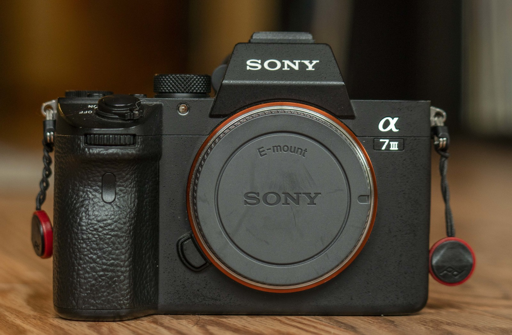

getting into video making can be hella intimidating. i get it. the gear is expensive, the software is confusing, and there is no concrete way to know if you're "doing it right". thankfully, there are resources and people out there who can help you. here, i've compiled the most helpful videos, articles, and tidbits that i've picked up in my efforts to improve my process. if you have even the slightest interest in trying your hand at this, check out what i've included for you down below.
*disclaimer: the following information comes from a self-taught hobbyist who hasn't had any formal training. it's highly unlikely that everything i've included is the best advice. hell, i may be completely wrong in some cases and i won't realize it until later in the future. the best teacher is experience, so wake up, go make cool shit, and keep learning how to make even cooler shit.
let's talk about gear. it's the biggest barrier for entry, and a primary deterrant for newcomers. but there are some myths that need to be addressed.
good gear doesn't get you better content on its own.
some of the best stuff i've put together have come from random snapchat videos. Some of the worst stuff i've made were the product of me getting distracted with a new toy and losing sight of the creative vision. a clear direction and skill beats expensive cameras 10/10 times.
the latest and greatest doesn't mean the best.
in the same thread as above, the newest fancy camera or drone isn't always the best for you as a creator. budgets aside, at a certain point, it becomes a question of whether you even need the newest features. yea, i'd love to try out recording 8k footage on a RED camera, but i also post primarily to instagram, where the boost in video resolution doesn't mean much on an iPhone screen.
that all being said, this is the kit i'm running with ~ 95% of the time when i'm making something.
the camera i've been using for three years now is the Sony A7iii. it's got everything that i could need video wise.
my favorite lens is the Tamron 28-75mm f/2.8 Di III RXD. i call it tammy. it's super sharp, gives me a flexible range for almost any situation, and is a fraction of the cost of similar lenses going for thousands of dollars. not to mention it creates bokeh that makes me happier than a mf.
i can get into the other stuff i'm using, but frankly. these two pieces are the only important ones. if you are looking to upgrade your setup, this channel is a great resource for research.
ok let's get into editing software. there are three different softwares that i've had experience in (excluding a ton of "free" options that gave my family computer viruses in 11th grade):
final cut pro x
if you're on a macbook, Apple offers final cut pro x (FCPX) as their premiere editing software if you want to upgrade from iMovie. it's a one time purchase of $300 which is a huge advantage over adobe offerings when looking long term. there are few things that i can do on premiere pro that i can't in FCPX, and i'm sure for those cases, it's still possible. For more advanced visual effects, there is additional software by Apple called Motion, but i don't have experience with it.
adobe premiere pro
once considered the industry standard, i am growing more and more frustrated with premiere pro. it's powerful, and can accomodate anything i could want, but it's slower on a mac compared to FCPX, and it still has bugs that make the price tag even more frustrating (on it's own, premiere pro costs $21 a month). i keep using it primarily bc there are more tutorials/resources on premiere pro than any other software at the moment, making trying new things easier. additionally, i can do some cool stuff in certain situations when integrating adobe after effects features.
davinci resolve
this is the one for everyone trying to get into video editing. number one thing about davinci resolve: its FREE. and get this - it's hella good. like in some ways, better than even premiere pro. in my opinion, learning how to use davinci resolve wasn't as easy as the two other options, but i still highly highly recommend it. There is a paid version with more features, but nothing is missing that you will be desperately wanting. i'm sounding like a broken record, but i really can't believe that this shit is free. try it.